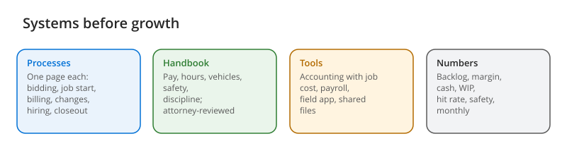

Systems before growth: software, processes and a company handbook
In one sentence: growth multiplies whatever you do today, good or bad, so write down how the company works and put simple systems in place before adding crews and jobs.

Write down the key processes
One page each, in plain words:
- bid/no-bid and estimating; see Saying no: which jobs to pass on;
- job start meeting; see Project management basics for a small company;
- daily report, time and cost codes;
- purchasing and receiving material;
- change orders and notices; see Getting paid on change orders and closeout;
- billing and collections;
- hiring and onboarding; see Hiring field crews;
- safety program; see Safety program as a business system;
- closeout.
The company handbook
Policies employees need: pay, hours and breaks, time keeping, vehicles and tools, phones, safety rules, drug and alcohol policy, discipline, leave. Have an employment attorney review it. See Employment basics in California.
Tools
- Accounting with job costing.
- Payroll that handles California and certified payroll.
- A field app for daily reports, time, photos and material requests.
- A shared document system with a standard job folder.
Choose tools after the process is written; software doesn't fix a process no one agreed on. See Is Procore worth it for a small electrical GC? for how to judge a larger platform.
Numbers to watch every month
Backlog, revenue, gross margin by job, overhead, cash forecast, receivables aging, WIP over/under billing, safety (meetings held, incidents), bid hit rate.
PM notes
If the owner took a two-week vacation, would jobs, billing and payroll keep running? That's the test of the systems.
Common mistakes
- Buying software before agreeing on the process.
- Growing crews faster than foremen and PMs.
- No monthly numbers until the year-end CPA meeting.